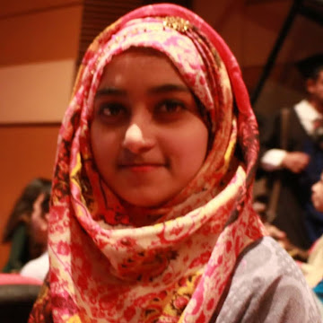

Sumaiya Binte Sultana Fatema

Summary
I am a beginner web development learner with a strong interest in becoming a full-stack developer. I am committed to learning both front-end and back-end technologies, building real-world projects, and continuously improving my skills to become a confident and capable developer.
Education
- Secondary School Certificate (SSC) – Completed
- Higher Secondary Certificate (HSC) – Completed
- Bachelor of Science in Computer Science and Engineering – North South University
Work Experience
Junior Developer & Student Projects
Various Projects (Academic & Freelance)
- Worked on document composing and formatting tasks.
- Created design mockups and prototypes using Figma.
- Developed a short project in C language to build problem-solving skills.
- Academic Project
Skills
- HTML (Beginner)
- Basic Programming in C
- Figma (UI/UX Design basics)
- Problem Solving
- Team Collaboration
- Basic Machine Learning Concepts
- Project Documentation & Composing
- Version Control with Git (Learning)
Other